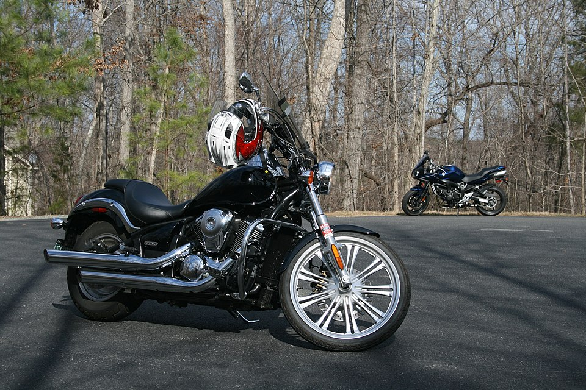
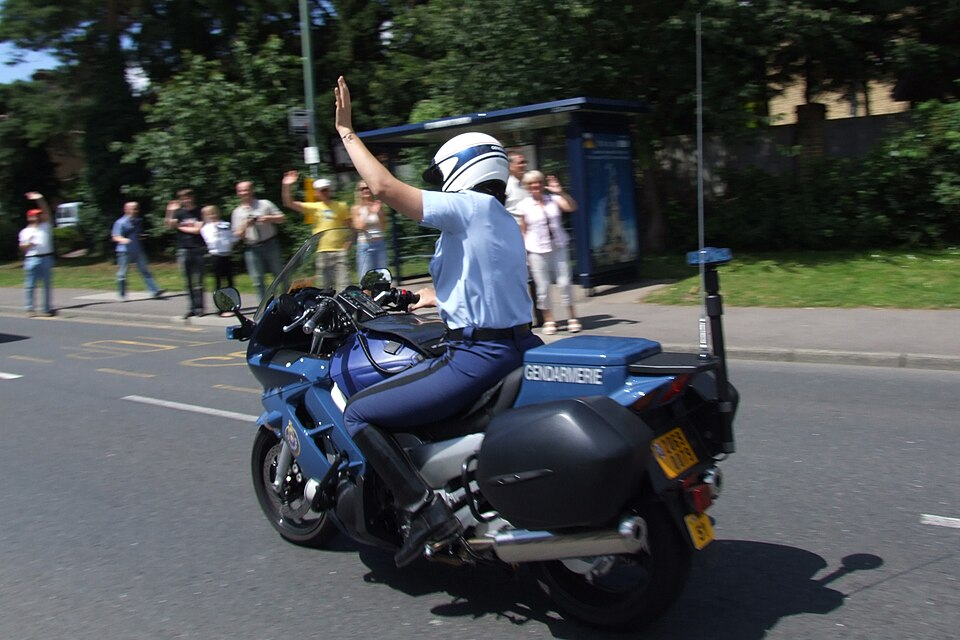
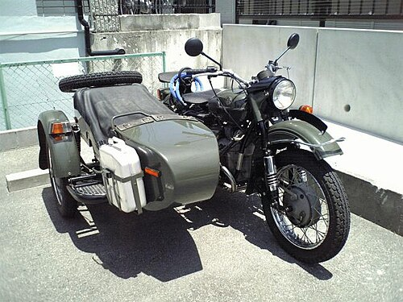

A motorcycle (motorbike, bike, or, if three-wheeled, a trike) is a two or three-wheeled motor vehicle steered by a handlebar from a saddle-style seat.
Motorcycle designs vary greatly to suit a range of different purposes: long-distance travel, commuting, cruising, sport (including racing), and off-road riding. Motorcycling is riding a motorcycle and being involved in other related social activities such as joining a motorcycle club and attending motorcycle rallies.
The 1885 Daimler Reitwagen made by Gottlieb Daimler and Wilhelm Maybach in Germany was the first internal combustion petroleum-fueled motorcycle. In 1894, Hildebrand & Wolfmüller became the first series production motorcycle.
Globally, motorcycles are comparable numerically to cars as a method of transport: in 2021, approximately 58.6 million new motorcycles were sold around the world, while 66.7 million cars were sold over the same period.
In 2022, the top four motorcycle producers by volume and type were Honda, Yamaha, Kawasaki, and Suzuki. According to the US Department of Transportation, the number of fatalities per vehicle mile traveled was 37 times higher for motorcycles than for cars.
Types
The term motorcycle has different legal definitions depending on jurisdiction (see § Legal definitions and restrictions).
There are three major types of motorcycle: street, off-road, and dual purpose. Within these types, there are many sub-types of motorcycles for different purposes. There is often a racing counterpart to each type, such as road racing and street bikes, or motocross including dirt bikes.
Street bikes include cruisers, sportbikes, scooters and mopeds, and many other types. Off-road motorcycles include many types designed for dirt-oriented racing classes such as motocross and are not street legal in most areas. Dual purpose machines like the dual-sport style are made to go off-road but include features to make them legal and comfortable on the street as well.
Each configuration offers either specialised advantage or broad capability, and each design creates a different riding posture.
In some countries the use of pillions (rear seats) is restricted.



History
Experimentation and invention The first internal combustion, petroleum fueled motorcycle was the Daimler Reitwagen. It was designed and built by the German inventors Gottlieb Daimler and Wilhelm Maybach in Bad Cannstatt, Germany, in 1885. This vehicle was unlike either the safety bicycles or the boneshaker bicycles of the era in that it had zero degrees of steering axis angle and no fork offset, and thus did not use the principles of bicycle and motorcycle dynamics developed nearly 70 years earlier. Instead, it relied on two outrigger wheels to remain upright while turning.
The inventors called their invention the Reitwagen ("riding car"). It was designed as an expedient testbed for their new engine, rather than a true prototype vehicle. The first commercial design for a self-propelled cycle was a three-wheel design called the Butler Petrol Cycle, conceived of Edward Butler in England in 1884. He exhibited his plans for the vehicle at the Stanley Cycle Show in London in 1884. The vehicle was built by the Merryweather Fire Engine company in Greenwich, in 1888.
The Butler Petrol Cycle was a three-wheeled vehicle, with the rear wheel directly driven by a 5⁄8 hp (0.47 kW), 40 cc (2.4 cu in) displacement, 2+1⁄4 in × 5 in (57 mm × 127 mm) bore × stroke, flat twin four-stroke engine (with magneto ignition replaced by coil and battery) equipped with rotary valves and a float-fed carburettor (five years before Maybach) and Ackermann steering, all of which were state of the art at the time. Starting was by compressed air. The engine was liquid-cooled, with a radiator over the rear driving wheel. Speed was controlled by means of a throttle valve lever. No braking system was fitted; the vehicle was stopped by raising and lowering the rear driving wheel using a foot-operated lever; the weight of the machine was then borne by two small castor wheels. The driver was seated between the front wheels. It was not, however, a success, as Butler failed to find sufficient financial backing.
Many authorities have excluded steam powered, electric motorcycles or diesel-powered two-wheelers from the definition of a 'motorcycle', and credit the Daimler Reitwagen as the world's first motorcycle. Given the rapid rise in use of electric motorcycles worldwide, defining only internal-combustion powered two-wheelers as 'motorcycles' is increasingly problematic. The first (petroleum fueled) internal-combustion motorcycles, like the German Reitwagen, were, however, also the first practical motorcycles.
If a two-wheeled vehicle with steam propulsion is considered a motorcycle, then the first motorcycles built seem to be the French Michaux-Perreaux steam velocipede which patent application was filed in December 1868, constructed around the same time as the American Roper steam velocipede, built by Sylvester H. Roper of Roxbury, Massachusetts, who had been demonstrating his machine at fairs and circuses in the eastern U.S. since 1867. Roper built about 10 steam cars and cycles from the 1860s until his death in 1896.